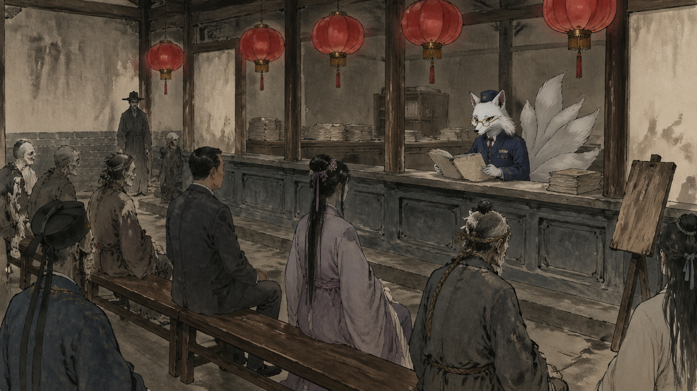
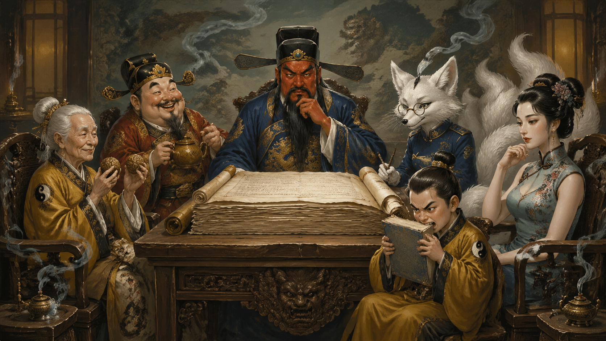
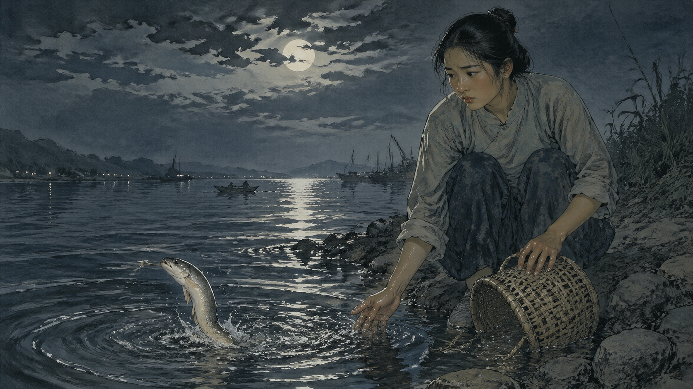
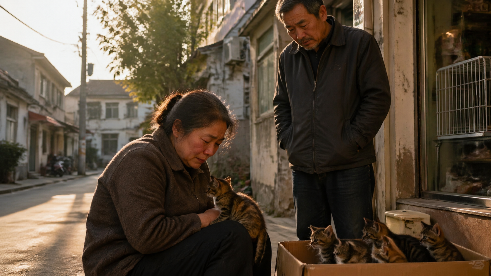

一
林知行从天台栏杆上跳下去的那个下午,雨刚停,云层裂开一道缝,夕阳像被谁不小心打翻的橙汁,从那道缝里漏下来,正好打在他眼睛上。
他后来回忆这一刻,觉得整件事最荒唐的部分就在这里——他人生的最后一秒,不是悲壮的,不是黑暗的,是有点刺眼。
他十五岁,初三,江苏南通,班级第一,年级前五,数学竞赛省二等奖,英语口语比赛市三等奖。书桌上的台灯永远亮着,妈妈在厨房永远在熬骨头汤,爸爸永远在客厅里把电视音量调到三格,生怕吵着他。生物老师上周还说:这孩子,稳了。
稳什么呢。稳得让他每天晚上躺在床上,听着自己的心跳,觉得那心跳的节奏不是 lub-dub,是不能停-不能停-不能停。
他攒了整整两个月的勇气,选了一个雨天,因为雨天人少。结果计算失误——雨停了。
他从十六楼顶下落的过程中,大约有三秒钟。
——酱油。这是他想到的第一件事,过了一秒才想到。妈妈下午让他买的酱油,他忘了。然后是风,风把他的校服灌成一只鼓鼓的塑料袋。然后是那道刺眼的橙色,他来不及闭眼。
他十五岁,据说很有前途。前途这东西像一条很长的走廊,灯都替他开好了,他只要一直走。他倒是想看看走廊外头是什么。大概也没什么。但没什么也是个东西,总比一直 lub-dub 要强。
——他没有摔到地上。
他被一只手,从脖领子后面,拎住了。
像拎一只刚出锅的小笼包。
二
"嗳嗳嗳,小同志,你急什么。"
一个老头的声音,带着浓重的苏北口音,在他耳朵边响起。
林知行睁开眼睛,发现自己悬在半空中,距离地面大概还有两层楼的高度。下面那滩积水,清晰得能看见自己倒影——可奇怪的是,倒影里的他,面无表情,像个真的死人。
而拎着他的,是一个穿着灰色对襟布衫、留着山羊胡、戴着老花镜的老头。老头一只手拎着他,另一只手叼着一根没点燃的烟,皱着眉头看他,像在看一份没填完的请假条。
"你……你是谁?"林知行听见自己的声音,发现这声音飘飘忽忽的,不太像从喉咙里出来的。
"我是这片儿的土地。"老头说,"你跳的这栋楼,归我管。一年到头我没几个事儿,你倒好,挑下班点跳。"
"……土地?"
"土地公公。"老头叹了口气,"现在的小孩,上课光背公式,神话故事都没人讲了。算了算了,别愣着了,跟我走一趟。"
老头一抖手,林知行只觉得脚下一沉,砰一声落在了某个走廊上。
走廊很长。两边墙壁是青砖灰瓦,头顶是木梁,梁上挂着红灯笼。空气里有一股淡淡的檀香味,还混着一点点——猪油渣的香气?
"这里是哪里?"林知行问。
"城隍庙后院。"土地公说,"严格讲,是阴间南通分署的接待处。你属于'非自然死亡-未完成式'类别,得先在这儿过个堂。"
"过堂?我犯什么法了?"
土地公推了推老花镜,看了他一眼,语气意味深长:
"你呀,逾期违约了。"

三
接待处的大厅,像七八十年代的县政府办事大厅。一排排长条木椅,坐着各式各样的"人"——有老有少,有的衣衫整齐,有的浑身湿透,有的脖子上还挂着一根麻绳没解下来。墙角一个老式的木牌,毛笔写着当前叫号,字迹潦草,像是哪个值班的小道童手痒乱涂的。
林知行被塞了一张号码牌:B1024。
"B 是非正常死亡。"土地公解释,"你慢慢等吧。"
"要等多久?"
"一般两小时。今天人不多。"
林知行四下望了望。隔壁坐着一个穿西装的中年男人,西装很整齐,只是领带打得歪歪的,胸前还插着一支没合上盖的钢笔,墨水洇了一大片。男人冲他点了点头:"小兄弟,初次办理?"
"……嗯。"
"我第三次了。"男人苦笑,"上一次是 1998 年股灾,上上次是 1986 年。我们家祖传的,一遇大事就跳——结果每次跳完都被退回去,说我'劫数未尽,任务未完成'。烦得很。"
林知行:"……还能退回去?"
"看情况。看你是谁,以及为什么来这儿。"男人叹气,"你别光听我的,等会儿你的案宗调出来你就知道了。"
林知行在长椅上坐下来,这时候才有空打量整个大厅。
大厅尽头有一面大照壁,照壁上写着八个金字:功过自陈,因果自负。照壁前供着一炉香,香火不断,香炉两边摆着两株万年青,长得茂密得过分,叶片绿得像刚上过油。
照壁旁边是一张毛笔小字写的告示,纸已经发黄:
青少年案近半月增多,各窗口先调心理因果一项,再问其他。
字是城隍亲手写的,毛笔。一个标点都没有。
他左边的长椅上,坐着一个穿汉服的姑娘,大约二十岁,头发梳得一丝不苟,但脸色发青。姑娘见他在看公告栏,主动开口:"你也是青少年组的吧?"
"……我十五。"林知行说。
"我十九,大二。"姑娘叹了口气,"导师让我重写第三版论文。"
林知行:"……"
"你呢?为什么来的?"
"……作业写不完?"
"作业写不完就跳啊?"姑娘瞪大了眼睛,"咱俩这阵营好像不太一样。"
"我不是因为作业。"林知行有点不好意思,"我就是……每天都觉得透不过气。"
姑娘点了点头,语气忽然软了下来:"我懂的。我也不全是因为论文。我就是觉得人生没有意思。"
她看着自己的鞋尖,小声说:"……结果到了这儿才发现,死也不是终点。这是另一个排队的地方。"
林知行也低下头。两个人沉默了一会儿。
"喂——"姑娘忽然问,"你猜我案宗里写的什么?"
"什么?"
"我前世是一只蚕。"姑娘苦笑,"养蚕户半夜从一堆死蚕里把我挑出来,放进竹箩,说'这只活的,留一条命'——其实她不为我,她是顺手,她半夜起来上厕所,顺路就把活的挑了。可我把她那句'顺手'认了真,认了二十一年。结果那老太太前年走了。我这一辈子吐的丝突然不知道该交给谁。我找不到要报的人了——就跳了。"
姑娘挠了挠头:"等会儿他们大概要退我回去。说我恩主虽不在,人间还有别人替她欠着。这话听着冷,但讲道理。"
"……感觉好惨。"
"还好啦。"姑娘摆了摆手,"我退回去之后,要活到至少三十岁才能再申请。算是被强制续命了。"
林知行望着她,忽然觉得自己的脑子里某个紧紧拧着的螺丝,被人轻轻松了一格。
正想继续聊,广播响了:"B1024 号,林知行,请到 7 号窗口办理。"
林知行站起来,腿有点软。临走前,姑娘冲他比了个加油的手势:"嗳,小弟弟,你的案宗,我有预感,挺好的。"
他走向 7 号窗口。窗口后面坐着的不是人,是一只——
——狐狸。
一只穿着深蓝色制服的狐狸,五条尾巴,鼻梁上架着金丝边眼镜,正在低头翻一本厚厚的卷宗。听见脚步声,狐狸抬起头,扶了扶眼镜,声音清脆得像个年轻女孩:
"林知行同志您好,我是您本案的承办员,胡九妹。请坐。"
林知行坐下,嗓子干得发不出声音。
"您于公元 2026 年 4 月 30 日下午 5 点 47 分,自江苏省南通市港闸区某住宅楼 16 楼跳下。我们的预警系统在您离地零点三秒时启动,本辖区土地公及时介入,将您接收至此。"胡九妹一边翻卷宗,一边说,"按照标准程序,我们需要先调阅您的——"
她翻到一页,顿了一下。
"……哎呀。"
"怎么了?"
"您这个案子,有点意思。"胡九妹推了推眼镜,抬头看他,眼睛亮起来,像两颗琥珀,"林同志,我可以这样讲——您不该来这儿。"
"我刚才确实跳了。"
"我不是说您没跳,我是说,您这一世的因果已经走完了。"胡九妹合上卷宗,站起来,"请您随我去三号会议室,城隍大人和几位老前辈,要亲自见您。"

四
三号会议室是一间更大的、更古色古香的房间。八仙桌一张,周围坐着四五位"前辈"。
主位上是一位红脸长须的中年人,穿着官服,头戴乌纱——林知行认出来了,这是城隍。
城隍左边,是一位白发苍苍的老太太,手里转着两颗核桃,眼神像鹰一样锐利。介绍说是黄大仙,本地分管"还愿"业务的。
城隍右边,是一位胖乎乎的、笑眯眯的、手里捧着一只茶壶的中年人。介绍说是本地财神,顺路过来旁听。
下首两位:一位穿着旗袍、脸色苍白、长得极美的——介绍说是某条河里的水仙;另一位是一个虎头虎脑的小道童,大约十一二岁,手里拿着一本《地藏菩萨本愿经》在啃,介绍说是值班记录员。
林知行坐下,心情非常复杂。他十五年来背的所有政治课本,在这一刻都不太能用得上。
胡九妹把那本厚厚的卷宗放在八仙桌正中,翻开。
"林知行同志,"城隍开口,声音浑厚,"您可知您这一世的来历?"
"……不知道。"
"不知者无罪,我们慢慢说。"城隍捻着胡子,"您前世,不是人。"
林知行心想,这不废话嘛,前世如果是人那不叫前世了。但他没敢说出来。
"您前世是一条白鳝。"城隍说。
林知行:"……???"
"不是泥鳅,是白鳝。淡水的,珍稀物种,生在长江口。"城隍很严肃,"公元 1998 年——您算一下,那一年正好长江流域大洪水——您当时已经活了 73 年,在白鳝里算是长寿成精的级别,马上就要修出元神。结果洪水把您冲到了一个农妇的渔网里。"
"……"
"那个农妇,本来打算把您卖了换钱给她生病的母亲抓药。她当时二十一岁,叫张爱萍。"
城隍翻过一页,声音慢下来。

"她拎着竹篓往集市走。您在篓里翻,白肚皮一闪一闪的,像谁把月亮剁碎了;黏液淌到她虎口上,凉、滑、带腥。修行七十年的灵物快要凝出元神,她不知道,但她手里发麻。她走到江边,本来是要歇歇脚的。她看了一眼篓子,看了一眼江,看了一眼她娘床头那一包还没付钱的药——"
"——然后她蹲下来,把篓子往江里一扣。江水咕咚一口把您咽了。她没起身,蹲在岸边干呕,呕不出来,倒哭出来了。她也没想清楚自己为什么哭。"
"她回到家,药钱是她男人后来借的。她娘还是没救回来。这件事她一辈子没跟人提过。"
城隍合上卷宗:"——可阴司这一边,记下了。"
张爱萍——是他妈妈的名字。
"您母亲一生没做过什么大善大恶的事,但唯独这一次,救了您。按照阴司的因果计法,这叫结缘。一条修行七十年的灵物,被她随手一放,放掉了一份大功德——这份功德,得有人来还。"
城隍看着他,目光温和:
"于是,十年之后,2010 年,您选择投生为她的儿子。"
"……我?"
"您。林知行,生于 2010 年 11 月 12 日,父亲林建国,母亲张爱萍。出生那天南通下大雨,医院走廊上,您妈妈抱着您,哭了整整一个小时。她不知道为什么哭。她只觉得这个孩子,面熟。"
林知行低下头,看着自己手背上的青血管,半天没说话。
五
"那……那我这十五年——"
"是来还恩的。"黄大仙接话,"白鳝报恩,讲究三件事:陪伴、争气、平安。"
"陪伴——您在她身边长大,病了她照顾,她病了您也守着。这个您做到了。"
"争气——您从小学到初三,成绩从未掉出年级前十。您妈妈在小区里走路都比别人腰板直三寸。这个您也做到了。"
"平安——"
黄大仙顿了顿,看着他,语气微妙地一沉。
"——这一项,您今天差点搞砸。"
林知行低下头。
"但是,"城隍接过话,语气却忽然轻快起来,"按照阴司最新的《灵物报恩 KPI 考核办法(2024 修订版)》第十七条:报恩功德,以存续年限计,以行止善念计,不以死法计。 您虽然今天选择了一个比较激烈的退场方式,但此前十五年的报恩积分,已经远远超额完成。"
"超额了?"
"超了 1.7 倍。"小道童抬起头,认真地说,"您妈妈这一辈子的功德额度本来只够换一个普通儿子,您给她超出了一个'优秀儿子'+'懂事孩子'+'未来名校苗子'的全套福报。账,结清了。"
"啊?"
"啊什么啊,"水仙第一次开口,声音清冷得像从井里打上来的水,"林同志,我跟您讲个白话——您毕业了。"
"毕业了?"
"毕业了。"城隍点头,"按照规定,因果已了,缘分已尽,您可以——"
城隍站起来,从袖子里抽出一张红色的票根,推到林知行面前:
"——进入下一世了。"
六
林知行盯着那张红票根,半天没说话。
票根是毛笔写的,字不算端正,墨迹有点洇,像是哪位前辈临时蘸的墨。中间三个大字——
已 结 清
底下盖着一个朱砂的圆印,印文小,是篆字,他认不全,只看得出"南通城隍司"几个字。背面有一行小字注:
持此票者,准予转身。畜生道、人道、天道,任选其一。三日为期,逾期再议。
"这……这就走了?"林知行听见自己的声音在抖。
"嗯,可以。"
"那我妈妈呢?"
会议室里安静了一秒。
胖财神咳嗽了一下,慢悠悠地说:"小兄弟,这就是为什么我们让您亲自来一趟——而不是直接走标准的'非正常死亡-超额履约'结算流程。"
"什么意思?"
"意思就是,"财神咧嘴一笑,露出一口大白牙,"我们觉得您这账,结得不甘心。"
"什么叫不甘心?"
"您妈妈从今天下午开始,后半辈子都得过得很难。"财神实话实说,"这不是我们造成的,这是您造成的。她不知道您前世是白鳝,她也不知道她下半辈子的福报已经透支预支完了。她只知道她儿子从十六楼跳下来,死了。"
林知行的胸口,又开始痛起来。这种痛不像跳楼前那种不能停-不能停-不能停的痛,而是另一种——啊-原来是这样-原来是这样的痛。
"我能不能……"林知行小声问,"我能不能不走?"
"你已经死了,小兄弟。"
"那能不能……回去?"
"原身已经摔了,"胡九妹皱着眉头,"按照标准程序,回不去了。"
林知行的头垂得更低了。
这时候,黄大仙忽然把核桃往八仙桌上一拍,啪一声。
"按标准程序回不去——"老太太眯起眼睛,"标准程序之外,我看可以再聊聊。"
七
"诸位,"黄大仙环视一圈,"这孩子的案子,我看不能这么草草结了。"
"理由?"城隍配合地问。
"第一,他妈妈那条白鳝放生之后,十年间陆续做了七件小善事,我刚刚翻了备份卷宗——其中三件,因果还没结。"
水仙挑了挑眉:"哪三件?"
"2014 年,她在菜市场救了一只被人剁了一半尾巴的小奶猫,后来送给了邻居家。那只猫是只狸花,现在还活着,十二岁了,前些日子刚刚老死,正在排队投胎。"
"2019 年,她在濠河边——南通城里那条老护城河——捞起了一只翻肚皮的小乌龟,养了一年放生了。那只乌龟是个修行了三十年的老成员,目前在长江里继续修行。"
"2023 年,她下班路上看见一只翅膀受伤的麻雀,带回家养好了又放飞。那只麻雀,现在是雨花台一带的精怪联合会会员。"
"也就是说,"黄大仙慢悠悠地说,"她这后半辈子还有福报可以领。只是——"
她意味深长地看了林知行一眼。
"——只是接收人换一下,程序上完全可以。"
林知行愣住了。
"什么意思?"
胡九妹兴奋地站起来,把卷宗重新翻开:"林同志,黄大仙的意思是——按照《报恩转籍办法》第六条,如果当事灵物自愿,可以将剩余因果转移到另一个载体继续完成。简单讲——您可以换个身份回去。"
"换……什么?"
胖财神笑得肚子都在抖:"小兄弟,你妈妈那只 2014 年救的狸花猫,刚老死,正排队投胎——它本来要去投生一窝七只里的最后一只。如果你愿意,我们可以把名额给你。"
"……投胎成猫?"
"对。"
"投生回我妈妈家?"
"对。"
"我妈妈家最近没养猫啊。"
"她明天会路过宠物店,看见一只小奶猫,会带回家。"水仙补充,"这是已经登记好的因果线,误差不超过六小时。"
"……为什么是猫?"
"狗也行。"小道童认真地说,"但是上一笔功德是猫,转籍要对应——你要不要查表?"
"不用了。"
林知行沉默了。
会议室里,所有人都安静地等他。
过了大概半分钟,他抬起头:
"……我能记得我是谁吗?"
会议室里,大家面面相觑。
"按规定,投胎要喝孟婆汤。"城隍说,"但是——"
"但是您是报恩转籍。"胡九妹接过话,眼睛弯成月牙,"按照《孟婆汤豁免条例》第三条:报恩转籍者,可申请半碗汤。"
"半碗?"
"忘记自己是谁,但记得爱谁。"
林知行的眼泪,在这一刻,终于掉了下来。
八
办手续花了大概一个小时。
胡九妹抱着卷宗带着他在大厅里跑了好几个窗口:轮回许可证转报恩转籍许可证、孟婆汤减半申请、新户口注册(品种:狸花猫,性别:公,毛色:黄褐+黑斑,体重:出生时 110 克)、健康证(免疫力:优秀,因为附带原灵物七十年修行底子)、备注栏(永久免费 wifi——不是,永久免费通灵权限——他可以听懂中文,但不能说话,免得吓到人)。
办到一半,黄大仙从外面溜达进来,手里拎着一个小布袋。
"喏,给你的。"老太太把布袋扔到他怀里,"猫薄荷。不开光,就是寻常的草。我自己院里种的。第一年别玩疯了。"
林知行接过来,布袋粗粗的,有点扎手。
水仙后到。她什么也没给。她只是看着他,轻声说:
"小同志,猫的寿命大约十五年。十五年后我们再见。"
"……再见的时候,是不是又要轮回?"
"那时候你妈妈也老了。"水仙笑了笑,"陪她走完这一程,你的因果就真的圆满了。然后嘛——"
"——然后你想去哪里都行。"
林知行使劲点了点头。
九
最后是城隍亲自送他到孟婆桥。
桥下是奈何溪,溪水冒着热气,桥头一个老太太守着一口大锅,锅里咕嘟咕嘟煮着汤,香气复杂,有点像中药,又有点像妈妈熬的骨头汤。
老太太不像传说里那么阴森,反而像菜场里卖咸菜的阿姨,围着围裙,头发花白,看见他笑眯眯的:
"哟,半碗的呀。"
"……嗯。"
老太太拿起一只小瓷碗,舀了大半勺,又用勺子背刮回去一点,递给他。
"喝完就忘了大部分。但是——"老太太眨眨眼,"最重要的那一点点,留给你。"
林知行接过碗,手有点抖。
他在喝之前,问了最后一个问题:"婆婆,我会忘掉自己是林知行吗?"
"会。"
"那我会忘掉跳楼那件事吗?"
老太太抿嘴笑了:"傻孩子,你这次走得这么不甘心,就是为了忘掉这件事才转籍的。当然要忘。"
"……那我会忘掉爸爸妈妈吗?"
"不会。"老太太说得很轻,但很清楚。
"你会忘掉他们的名字,忘掉他们的脸。但你一闻到红烧肉的味道,你就知道——这家是你的家。"
林知行闭上眼睛,把汤,一口喝光了。

十
第二天,公元 2026 年 5 月 1 日,周日。
南通,某小区,五楼。
张爱萍把头埋在丈夫怀里,眼睛已经哭肿了。她从昨天下午接到电话开始就没停过哭。家里的米饭还热着,是昨天她给儿子煮的;桌子上摆着儿子最喜欢的红烧肉;阳台上儿子的校服还挂着,周一要穿的。
林建国搂着妻子,什么也说不出来。他比妻子还沉默。他不哭,他只是发呆,像一台被拔了电源的旧电视。
林建国一辈子话少。前一夜他在阳台上抽了七根烟。第八根他点了,没抽,夹在手指里看它一节一节烧成灰。妻子凌晨两点出来,问他抽不抽。他说不抽了。又过了好一会儿,他说:
"萍儿,知行下午让你买的酱油,明天我去买。"
妻子在黑里愣了一下,没出声。
下午三点,张爱萍说她想出去走走,不然要憋疯了。林建国陪她下楼。下楼前他绕去厨房,从冰箱顶上摸到一张超市小票——不是这趟用的,是上一趟用的。他把小票揣兜里。
他们漫无目的地走,走到了小区门口的一家小宠物店。
店门口,一个小纸箱,里面挤着五六只刚断奶的小猫。
张爱萍这一辈子从不养小动物。小时候她养过一只兔子,死的那天她哭得发了三天烧。从那以后她说,养什么都怕。
可是她走到纸箱跟前,停住了。
纸箱里最角落,缩着一只小奶猫。狸花,黄褐底色,黑斑,瘦瘦的。它从角落里爬出来,爬到她的鞋面上,不动了。
她蹲下来,本来是想看一眼就走。
它没躲。它就那样窝在她膝盖上,眼睛是琥珀色的,看着她,像在等什么。
她的腿很快就麻了。
她没站起来。
她就那样蹲着,蹲了很久。林建国在旁边,一直没说话。
最后她听见自己说:"……老林,这只——"
"我们带回去吧。"
十一
小猫被抱回家的那一晚,在客厅里转了一圈又一圈,最后跳上了林知行的书桌。
它在那张被儿子用了九年的写字桌上,转了三圈,然后,蜷起来,睡着了。
张爱萍站在门口看了很久。
她对丈夫说:"……老林,你说,这猫怎么——"
"——怎么这么熟啊。"
林建国走过去,在小猫旁边蹲下,看了半天,伸出手指,摸了摸小猫的头。
小猫眯起眼睛,呼噜了一声。
林建国忽然就笑了。这是他这一天第一次笑。他笑着笑着,眼泪就下来了。
他对妻子说:"萍儿,你看,他像不像那时候——"
——不用说完,张爱萍就听懂了。
十二
土地公站在阳台外面的虚空中,叼着那根永远没点燃的烟,旁边是抱着核桃的黄大仙,以及笑眯眯的胖财神。
胡九妹趴在窗台上,看着那只小猫,用尾巴尖儿擦了擦眼睛——她不承认那是哭。
"成了。"城隍从他们背后慢悠悠地走来,"账,这下真的结清了。"
"陪十五年人,再陪十五年猫,加起来三十年。"小道童在一边掰手指,"长江白鳝·甲字 4071 号同志,这趟值。"
"嗯。"黄大仙慢悠悠点头,"值。"
胖财神往锅里——不是,往窗户里看了一眼,看见那一家三口围坐在小猫旁边,妈妈在抹眼泪,爸爸在笑,小猫睡得四爪朝天,打着呼噜。
财神转过身,长长地舒了一口气,把手里的茶壶一举:
"我宣布——"
"——这单业务,结案。喜剧收尾。"
土地公终于点燃了那根烟,深深吸了一口,吐出一个烟圈,烟圈在江南春末的夜空里,慢慢散开。
十三 · 小猫的前三个月
被带回家的那只小奶猫,身份证上写的名字其实叫"林知行"——不,等等,猫没有身份证。但土地公在阴差簿子上,给它登记的备注是:"乳名随主家定,户名随旧主"。
主家给它起的名字叫——小行。
张爱萍起的。她给丈夫解释:"看它眼睛,像知行小时候。所以叫小行。"
林建国咳嗽了一声,没敢点头,也没敢摇头。他只是默默地拿了相机,给小猫拍了张照,洗出来,放在儿子的相框旁边。
小行在这家住下的第一个星期,只做了一件事。
林知行的房间,从那天起,门一直关着。张爱萍不让任何人进。
第七天傍晚,张爱萍打扫房间,把那扇门打开了。她不打算清空儿子的东西,她只是想进去看看,通通气。
她在儿子的书桌前坐了一会儿,翻了翻儿子的笔记本,然后,实在受不了,捂着脸跑了出来。
她出来之后没关门。
晚上吃完饭,她和林建国坐在客厅看电视,半天没看见小行。
"小行呢?"她问。
林建国说:"我刚才看它往里面跑了。"
张爱萍站起来,蹑手蹑脚地走到儿子房间门口,推开一条缝。
她看见——
小行,蜷在儿子的枕头上,睡着了。
四只爪子整齐地收在身下,尾巴卷成一个标准的圆,呼吸均匀,眉头舒展,像是在做一个很久没做过的、安心的梦。
张爱萍站在门口,看了很久很久,然后没有进去,没有叫醒它,只是把门轻轻地带上,留了一条缝。
她回到客厅,坐在丈夫旁边,握住他的手,小声说:
"老林,我觉得……他没走。"
林建国把她的手握得更紧了一些。
他说:"……嗯,我也觉得。"
⁂
那天晚上,小行做了一个梦。
它梦见自己在一片阳光底下,有人,在叫它的名字。
不是叫"小行"。
是另一个,很久以前的名字。它已经记不清了。
但是它知道,叫它的人,是它最爱的人。
它在梦里喵了一声,算是回答。
醒过来的时候,枕头上有它流的口水,枕头边上有妈妈悄悄放的一颗鱼干。
它呼噜了一声,翻了个身,继续睡。
尾 声
很多年以后——确切地说,十五年以后。
南通,同一个小区,五楼。
一只老猫,毛已经花白了,眼神温和,卧在窗台上。窗台上有一盆茉莉花,香得很。
张爱萍此时五十一岁。她正在厨房做晚饭。红烧肉的香气飘出来,飘到客厅,飘到窗台。
老猫的耳朵动了动。
它跳下窗台,慢慢走到厨房门口,蹲下来,看着妈妈的背影。
妈妈头发已经有一些白了,但腰板还是那么直。
老猫喵了一声。
张爱萍回头看它,笑着说:"知道你饿了,马上好,马上好。"
她又转回头,继续翻锅里的肉。锅边搁着的酱油瓶——那是今早她让老林去买的,老林买回来,放下,什么也没多说。
老猫眯起琥珀色的眼睛。
夕阳从窗户照进来,很暖。
—— 全文完。